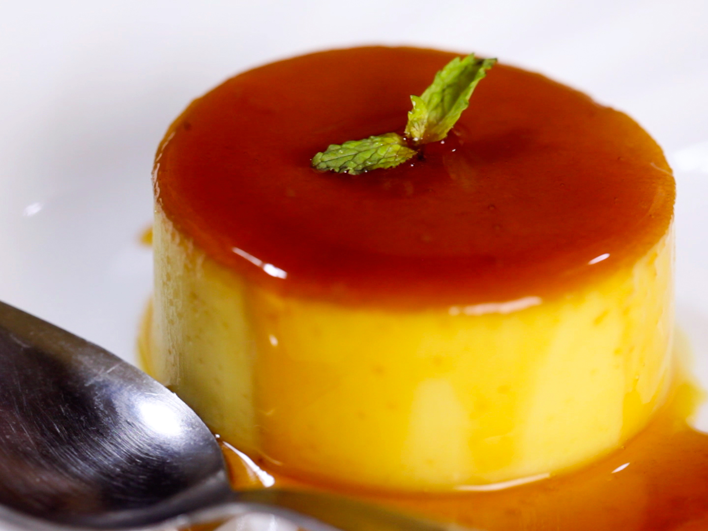
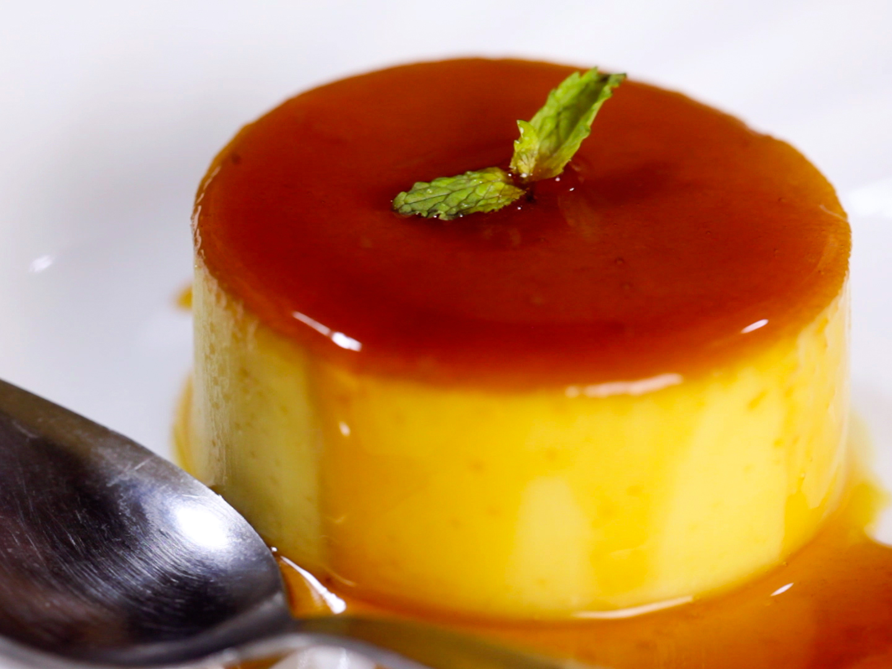
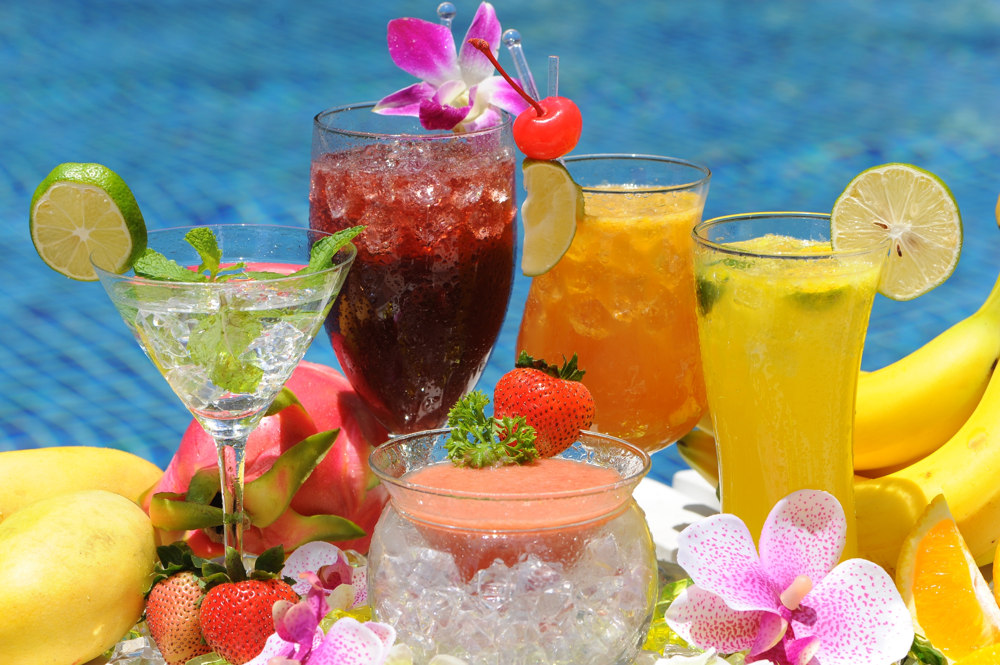
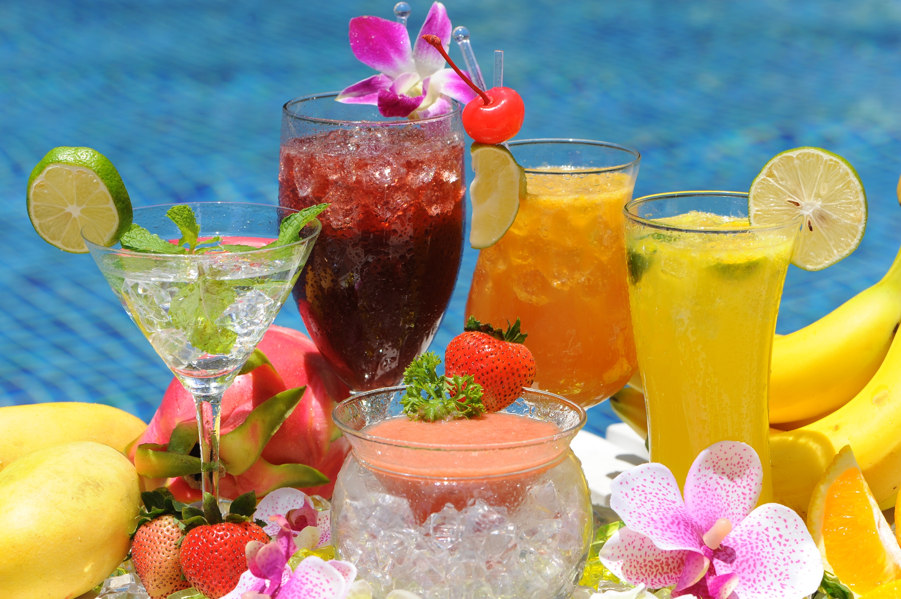

MENU

Php 69
Sisig is a Filipino dish made from parts of pig head and chicken liver, usually seasoned with calamansi, onions and chili peppers.

Sisig is a Filipino dish made from parts of pig head and chicken liver, usually seasoned with calamansi, onions and chili peppers.
Php 69.00
Lasagna is the name of one of the oldest and best-known pasta shapes.

Lasagna is the name of one of the oldest and best-known pasta shapes.
Php 59
Adobo is the closest thing to a national dish in the Philippines, consisting of seared and browned chunks of meat, seafood, fruit, or vegetables mixed with white vinegar or soy sauce (or both), bay leaves, garlic, salt, sugar, oil, and black pepper. T

Adobo is the closest thing to a national dish in the Philippines, consisting of seared and browned chunks of meat, seafood, fruit, or vegetables mixed with white vinegar or soy sauce (or both), bay leaves, garlic, salt, sugar, oil, and black pepper. T
Php 49
Halo-halo is an iconic Filipino shaved ice dessert that's assembled in a tall glass and mixed by the diner with a long-handled spoon upon arrival—the namex means "mix-mi."

Halo-halo is an iconic Filipino shaved ice dessert that's assembled in a tall glass and mixed by the diner with a long-handled spoon upon arrival—the namex means "mix-mi."

Php 69
Leche flan is a Filipino dessert that is essentially a caramel custard consisting of milk, sugar, and eggs, with the addition of vanilla flavoring.

Leche flan is a Filipino dessert that is essentially a caramel custard consisting of milk, sugar, and eggs, with the addition of vanilla flavoring.
